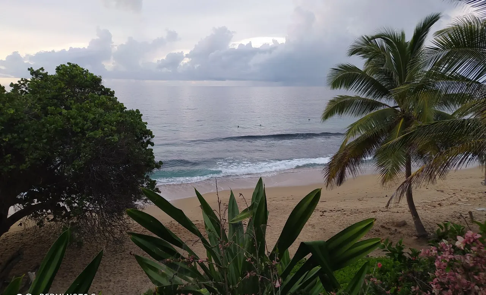
Playa Corrales, al cruzar la calle
Con tan solo cruzar la calle ya está en una de las playas más hermosas de la zona. Sus atardeceres y amaneceres son un espectáculo.
Hoy en Corrales
- Mañana amanecesobre el mar
- Olas
- Agua
Cómo el mar cambia de color
En la mañanita el mar se viste de plata y en pocos minutos cambia a azul oscuro. Ya con el sol despiertan el azul celeste y el verde turquesa.
Lo que se oye y se ve
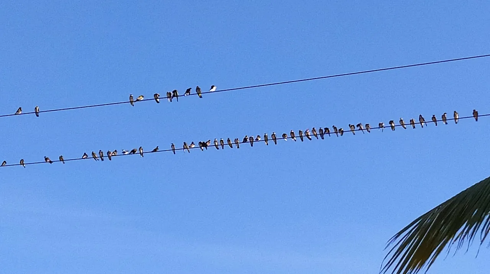
Las golondrinas
En los cables frente a la casa, a primera hora y al final de la tarde, ofrecen un show musical casi todo el año.
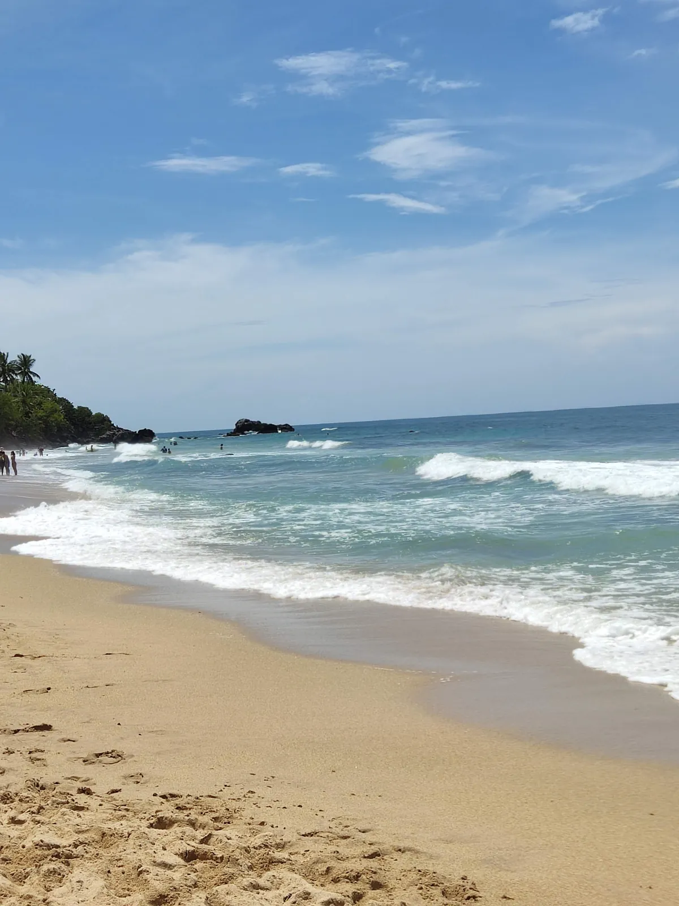
Las olas
La concha natural de unos 10 metros que envuelve Playa Corrales hace un sonido muy especial cada vez que las olas besan la arena.

Los atardeceres
Cada día un show distinto, entre los más bellos que se pueden descubrir. El amanecer es otro gran atractivo.

La luna llena
En algunas épocas entra a Quinta Escape. Se disfruta con las luces apagadas y el rumor de las olas.
Las playas de la zona
Caracolito y Majagua son las que más recomendamos. A las dos se llega solo por mar, en peñero desde Puerto Francés.
- Al cruzar la calle
Playa Corrales
La más cercana y la más exclusiva del área. Bajada suave, una acústica espectacular y un mar que cambia de color. Se recomienda bañarse en la orilla, por algunas piedras.
Ver Playa Corrales en Maps 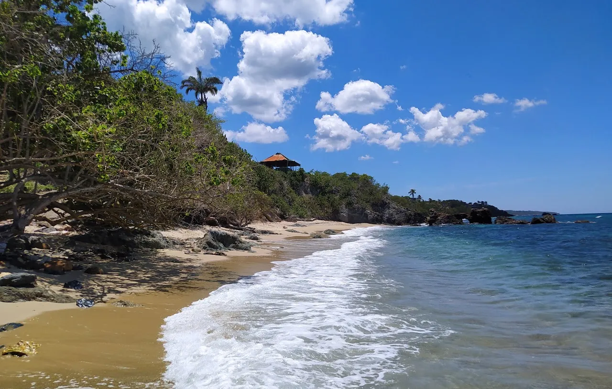
A menos de 500 mPlaya Escondida
Muy poco conocida, la frecuentan los locales. Fuerte bajada y muy solitaria. El carro se deja en la calle.
Ver Playa Escondida en Maps A unos 800 m
A unos 800 mPlaya Caimán
Medio oculta entre farallones y piedras, ideal para bucear, con piscinas naturales del mar. Bajada peatonal un poco pendiente.
Ver Playa Caimán en Maps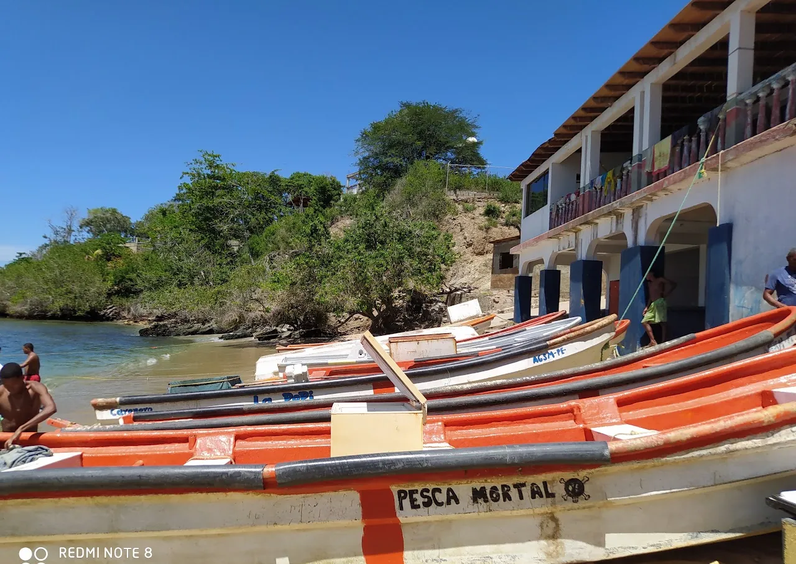
En la zonaPuerto de pescadores
Aquí llega el pescado más fresco de la zona. Recuerde llevar su cava.
Ver Puerto de pescadores en Maps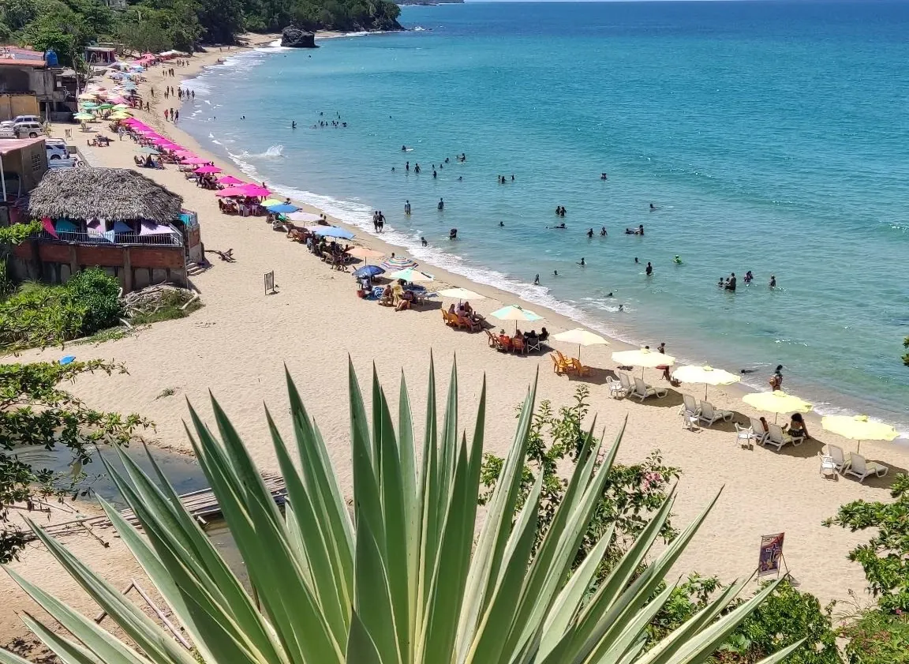
El puebloChirimena
Iglesia pequeña y un malecón para ver el mar azul intenso. Su playa no tiene piedras, la arena es blanca y el oleaje es ideal para nadar con el mar mansito.
Ver Chirimena en Maps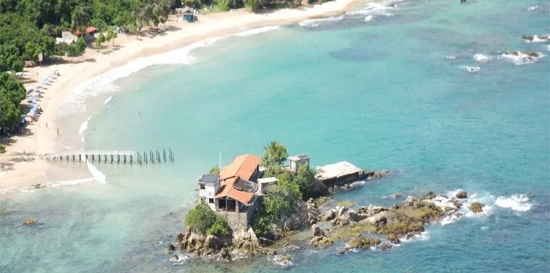
En bote desde Puerto FrancésCaracolito
La playa más atractiva de toda la zona de Higuerote: oleaje suave, agua tibia y un paisaje natural hermoso.
Ver Puerto Francés en Maps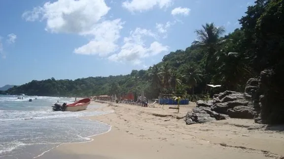
A 2 minutos de CaracolitoMajagua
Aguas cristalinas, con toldos y restaurante. Se llega en peñero desde Puerto Francés, a unos 15 minutos de Chirimena en carro.
Ver Puerto Francés en Maps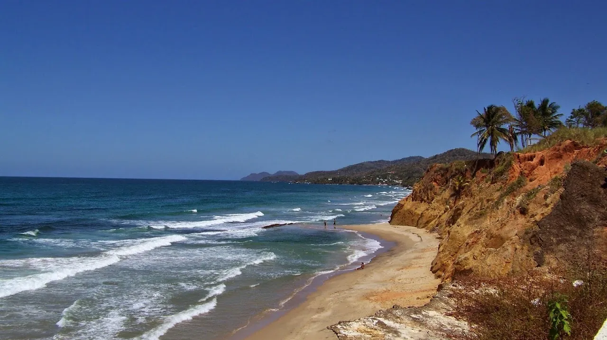
A 4 km de ChirimenaPlaya Chirere
La preferida de los surfistas. Carretera de tierra: maneje con cautela, sobre todo si ha llovido.
Ver Playa Chirere en Maps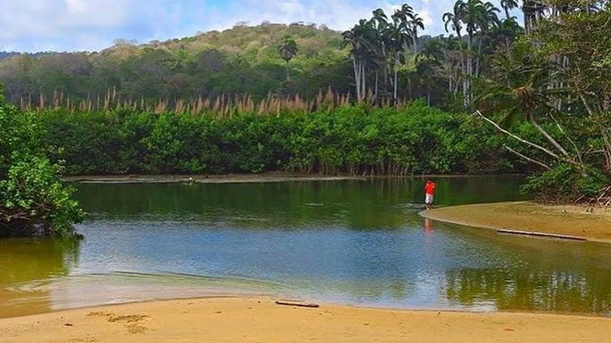
Junto a Playa ChirereLaguna de Chirere
Agua muy fresca y limpia que desemboca en la playa. Se camina unos 200 metros desde donde se deja el carro.
Ver Laguna de Chirere en Maps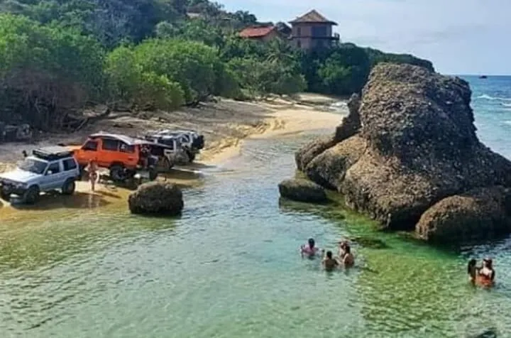
Unos 10 km después de ChirimenaPlaya El Banquito
Piscinas naturales ideales para bañarse con niños. Vía solo para rústicos, mejor 4x4 y fuera de época de lluvia.
Ver Playa El Banquito en Maps
Dónde comer
En la zona no hay muchas opciones. En la playa los locales preparan pescado frito, y también se lo traen a la casa si lo pide.
Dónde comprar pescado fresco
Los pescadores dejan su pesca a «Taco», en el puerto de pescadores: pescado recién salido del mar y a muy buenos precios. Recuerde llevar sus cavas.
¿Ya tiene fechas?
Díganos cuándo y cuántos vienen, y le respondemos disponibilidad y precio.
Pedir presupuesto por WhatsApp